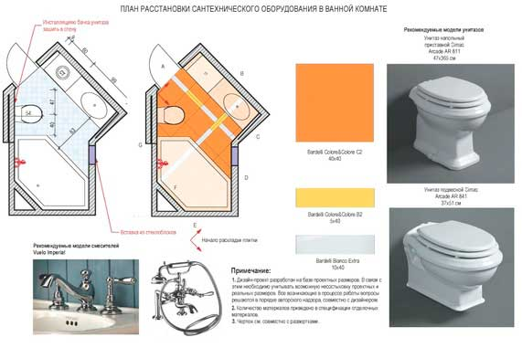

План расстановки сантехнического оборудования

В першу чергу цей план необхідний сантехнікам, які будуть виконувати підводку всіх комунікацій водопостачання та водовідведення як у ванних кімнатах і санвузлах, так і на кухні, в тому числі і для відповідних побутових приладів. На цьому кресленні вказуються моделі підібраного для проекту сантехнічного обладнання, робиться точна прив'язка його розташування по стінах, а також відзначається розміщення інших елементів - змішувачів, клапанів, і тому подібного. Для спрощення монтажу та позбавлення від можливих похибок, помилок і переробок, в план розстановки вносяться технічні карти від виробника обраної сантехніки.